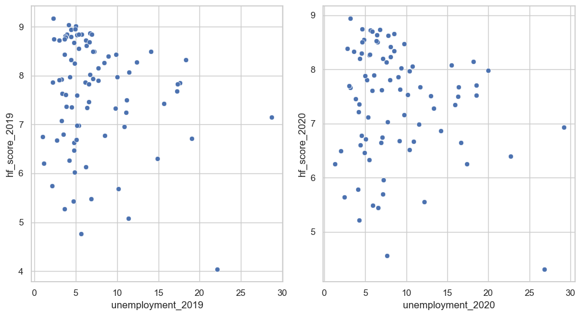
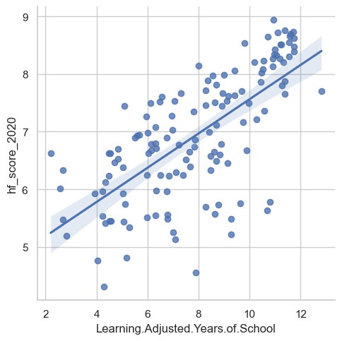

plt.rcParams["figure.figsize"] = [10.00, 5.50]plt.rcParams["figure.autolayout"] =Truef, axes = plt.subplots(1, 2)sns.set_theme(style ='whitegrid')sns.scatterplot(data = df, x ='GDP_2019', y ='hf_score_2019', ax=axes[0])sns.scatterplot(data = df, x ='GDP_2020', y ='hf_score_2020', ax=axes[1])plt.show()
plt.rcParams["figure.figsize"] = [10.00, 5.50]plt.rcParams["figure.autolayout"] =Truef, axes = plt.subplots(1, 2)sns.set_theme(style ='whitegrid')sns.scatterplot(data = df, x ='unemployment_2019', y ='hf_score_2019', ax=axes[0])sns.scatterplot(data = df, x ='unemployment_2020', y ='hf_score_2020', ax=axes[1])plt.show()

sns.lmplot(data = df, x ='Learning.Adjusted.Years.of.School', y ='hf_score_2020')plt.show()

sns.violinplot(data=df, x ='regime_2019', y ='hf_score_2019', palette="Set3")
C:\Users\erinb\AppData\Local\Temp\ipykernel_27244\1557232965.py:1: FutureWarning:
Passing `palette` without assigning `hue` is deprecated and will be removed in v0.14.0. Assign the `x` variable to `hue` and set `legend=False` for the same effect.
sns.violinplot(data=df, x = 'regime_2019', y = 'hf_score_2019', palette="Set3")
sns.violinplot(data=df, x ='regime_2020', y ='hf_score_2020', palette="Set3")
C:\Users\erinb\AppData\Local\Temp\ipykernel_27244\4094870363.py:1: FutureWarning:
Passing `palette` without assigning `hue` is deprecated and will be removed in v0.14.0. Assign the `x` variable to `hue` and set `legend=False` for the same effect.
sns.violinplot(data=df, x = 'regime_2020', y = 'hf_score_2020', palette="Set3")
This eda has demonstrated that there are relationships between the predictor variables and the response variable, human freedom index. This indicates that the features such as education level, economic freedom, and political regime are associated with human freedom. Notably, there is a strongly postiive correlation between a nations education level and their human freedom. That is, more educated countries are relatively freer. It is also notable that political regime has a stratified freedom level. My refined hypotheses will focus on economic freedom, education level, and political freedom as statistically significant indicators of human freedom. Some metrics, like GDP are colinear with economic freedom and thus they will not be focused on together in further analysis.